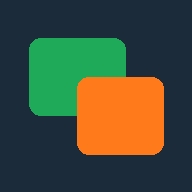

Chaque widget ouvre une seule application. Glisse sa barre pour le déplacer, tire son coin pour le redimensionner. Au clavier : Alt + flèches pour déplacer, Alt + Maj + flèches pour redimensionner.

Installer Multi-WidgetsIcône sur l'écran d'accueil, lancement plein écran et mode hors ligne.